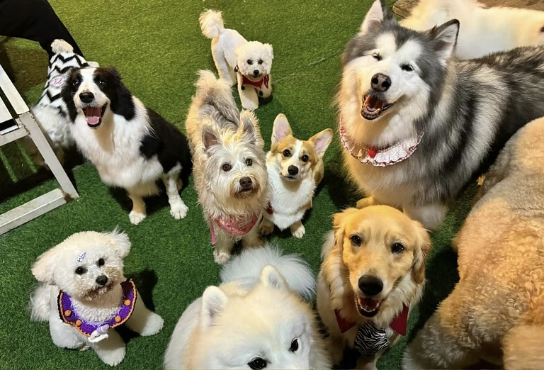
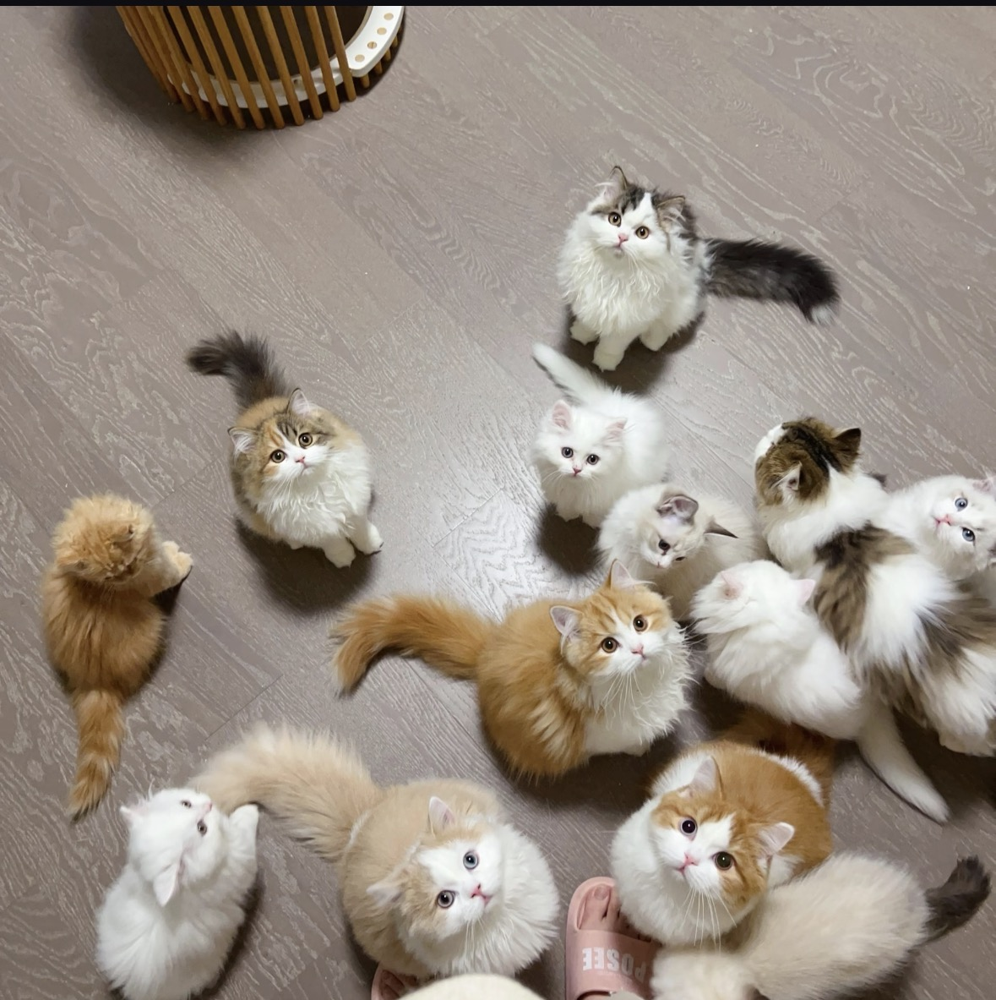
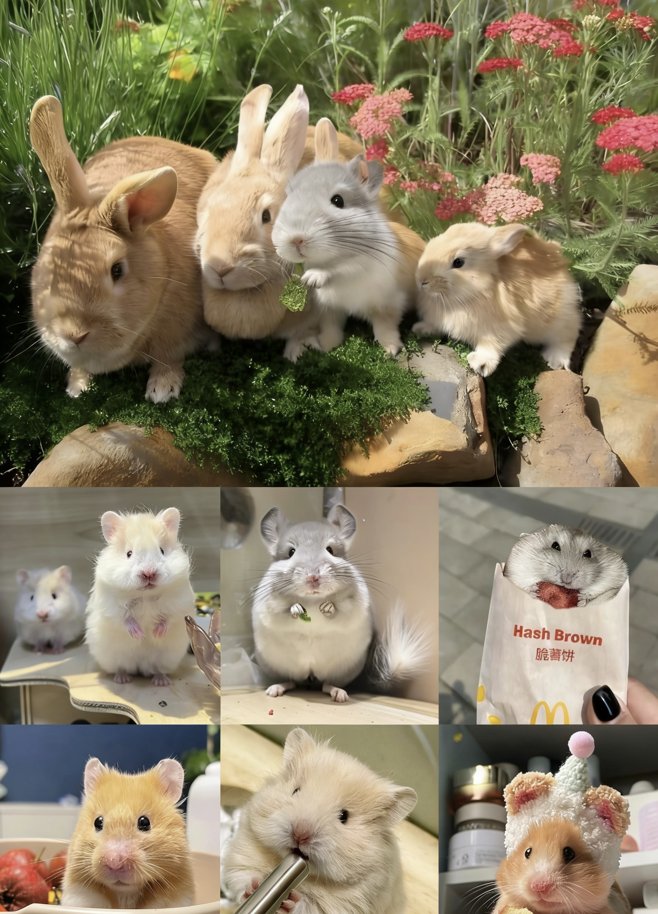

강아지는 인류의 가장 충성스러운 파트너로, 활발한 가족애와 힐링감이 가득하여 함께 어울리는 집사입니다.

고양이는 독립적으로 조용하고 외모가 뛰어나며, 많은 동반자가 필요 없어 혼자 사는 사람들에게 훌륭한 따뜻한 놀이 친구입니다.

햄스터, 토끼, 토토로 등 작은 애완동물은 면적이 작고 사육이 간단하여 공간이 제한된 애완동물 애호가에게 적합합니다.
초콜릿, 포도, 양파 및 기타 독성 식품을 거부하는 대신 특수 애완 동물 사료를 선택하고 깨끗하고 충분한 식수를 보장하기 위해 정기적으로 먹입니다.
어린 애완동물은 제때 백신을 접종하고, 매달 체외 구충, 분기마다 체내 구충을 하여 기생충과 전염병을 예방하고, 애완동물의 건강을 지킵니다.
정기적으로 털을 빗고 귀와 손톱을 깨끗이 하며, 강아지는 적당히 목욕을 하고, 고양이는 목욕 빈도를 줄여 거주 환경을 깨끗하고 위생적으로 유지합니다.
더 많은 상호작용과 적당한 운동으로 반려동물의 불안을 완화하고 인내심을 가지고 함께하며 집사관과 반려동물의 친밀한 관계를 형성합니다.